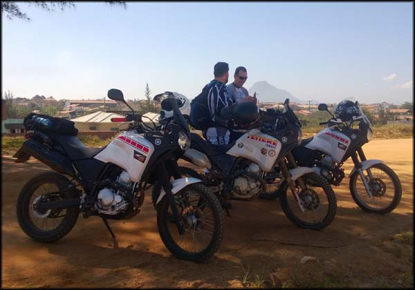
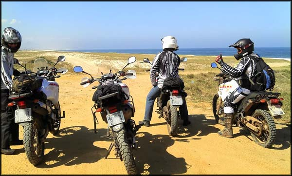
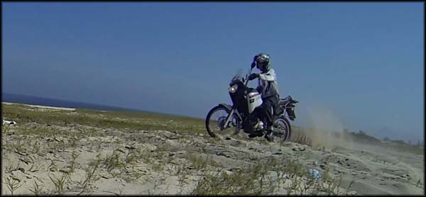
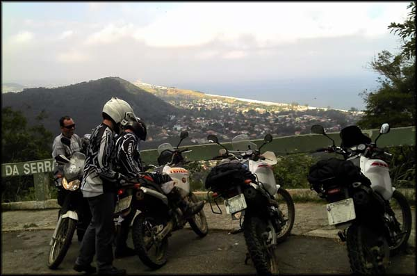

Em um sábado de agosto, eu e mais três amigos aproveitamos um dia de sol para puxar um passeio até a praia de Itaipuaçu, em Maricá, no Rio de Janeiro. Juntamos quatro Ténérés 250, coincidentemente todas de cor branca, e partimos de Niterói.
Passamos primeiro na loja Motobiu, que fica em Itaipu, e que eu queria conhecer. É uma loja especializada em equipamentos para motocross e trilhas, tem um estoque bem bacana e um atendimento bem amigável. Acabei comprando uma calça de cordura para trilha meio que no impulso.
Voltamos à estrada, e rapidamente chegamos na orla em Itaipuaçu. Fomos direto pro início, na área conhecida como Recanto, onde tem a famosa Pedra do Elefante, devido ao seu formato. Há muitos anos atrás meus pais tinham um apartamento de veraneio naquela região, e pude perceber como cresceu o comércio e quantidade de casas na área. Mesmo assim, muito espaço vazio a ser aproveitado.
Parada na orla de Itaipuaçu
A praia de Itaipuaçu não é brincadeira, mar brabo para mergulho, não são raros casos de afogamentos, lá tem muitas valas e forte correnteza. Mas é belíssima, águas limpas, e a areia é bem grossa. A estrutura turística ainda é bem rústica, mas existem alguns quiosques e restaurantes beira-mar que atendem a pouca demanda.
Mas, voltando às motocas, nosso objetivo era chegar no Buraco da Aeronáutica, espaço de dunas e areia branca muito frequentado por motoristas de jipes 4x4, sendo que muitos vão lá treinar para provas oficiais.
Começando então do Recanto, beiramos toda a praia até o final por sua rua de barro vermelho. Uma das motos teve um raio quebrado, e acabou rasgando a câmara de ar. Achamos um borracheiro, compramos nova câmara, e voltamos para a orla.
Pronto pra a diversão? Putz, o primeiro contato com a areia fofa de praia foi um sufoco. A moto não sai do lugar, mesmo sem colocar o peso sobre ela, a roda gira cavando buracos e mais buracos. Mas foi um início divertido.
Acabou a rua, agora é só areia !
Na tentativa e erro, começamos a pegar as manhas de pilotagem em areia. Esvaziamos os pneus traseiros um pouco, acostumamos com a aceleração sem tração e falta de estabilidade, e o negócio começou a ficar divertido.
Pilotar na areia é uma emoção à parte na primeira vez. A frente da moto fica completamente solta, parece que você está surfando. Para pegar velocidade, apelamos, e procurávamos sempre áreas onde tem aquela vegetação rasteira, que consegue dar um mínimo de tração para a roda traseira empurrar a máquina. Nem sempre aquela vegetação está lá, pois ela é consumida quando o nível do mar sobe, e depois cresce de novo.
Só tem um jeito de sair do lugar: aceleeeera !
Depois de meia hora, quando já estávamos ficando feras, e pensávamos se tentaríamos ou não desafiar as dunas de areia, de novo esvaziou o pneu daquela mesma moto com raio quebrado. Como já estava ficando tarde, achamos melhor acabar o passeio por ali mesmo, senão não pegaríamos mais o borracheiro e a loja de motos abertos.
Parada no Mirante da Serra da Tiririca
No caminho de volta, aproveitamos para pegar a Serra da Tiririca, que tem umas curvas bem legais tem um mirante com uma vista muito bonita da Praia de Itaipuaçu e baixada litorânea de Maricá. Paramos em um restaurante e saboreamos um belo almoço-janta.
Pança cheia, hora de voltar pra casa. Pegamos a Ponte Rio-Niterói, trânsito dos infernos. Onde eram três pistas antigamente eles transformaram em cinco, então quando engarrafa nem moto passa pelo corredor, é uma briga de retrovisores.
Depois desse final estressante, cheguei em casa já com a noite tomando o céu. Foi um passeio tranquilo e divertido, apesar de rápido. Vale a pena o roteiro.
Segue um pequeno vídeo com trechos do passeio: